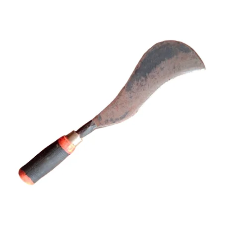

Ferrinex manufactures durable traditional iron tools used in agriculture, kitchens, and construction across India.

Traditional single-edged cutting tool used across South and Southeast Asia. Ideal for cutting trees, bamboo, coconuts, sugarcane, and clearing thick vegetation. Known by many names such as Aruval, Vettukathi, Gandasa, Parang, Bolo, Dao and Machete.
A traditional floor knife with a curved iron blade mounted on a wooden base. Used while sitting on the floor to cut vegetables, fish, meat, coconut, and other food items in many Indian households.
A strong stainless steel digging bar widely used in West Bengal for digging soil, breaking hard ground, and planting crops or trees. Essential tool for farmers and gardeners.
A curved sickle used for harvesting paddy, cutting sugarcane, bamboo, and small branches. Lightweight, durable, and perfect for quick field work.
A paddy straw cutting boti used for chopping dried stalks and agricultural residues. The curved blade fixed on a wooden base allows precise cutting for fodder and compost preparation.
A brick chisel used in masonry and construction. The wedge-shaped iron blade helps break bricks, stones, and hard construction materials into smaller pieces.
A traditional meat cleaver with a heavy iron blade used for cutting meat, poultry, fish, and small bones. Common in rural kitchens and butcher work.
A strong curved iron tool used for cutting hard fruits like date palm (khejur), coconut, and other tough agricultural produce.
Email: contact@ferrinex.com
Phone: +91 7063505132